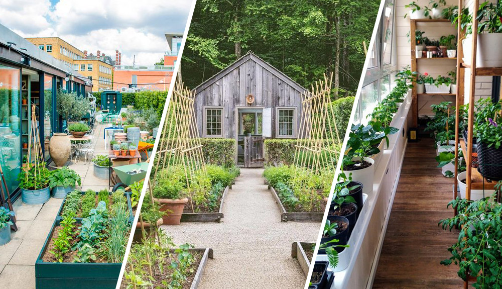
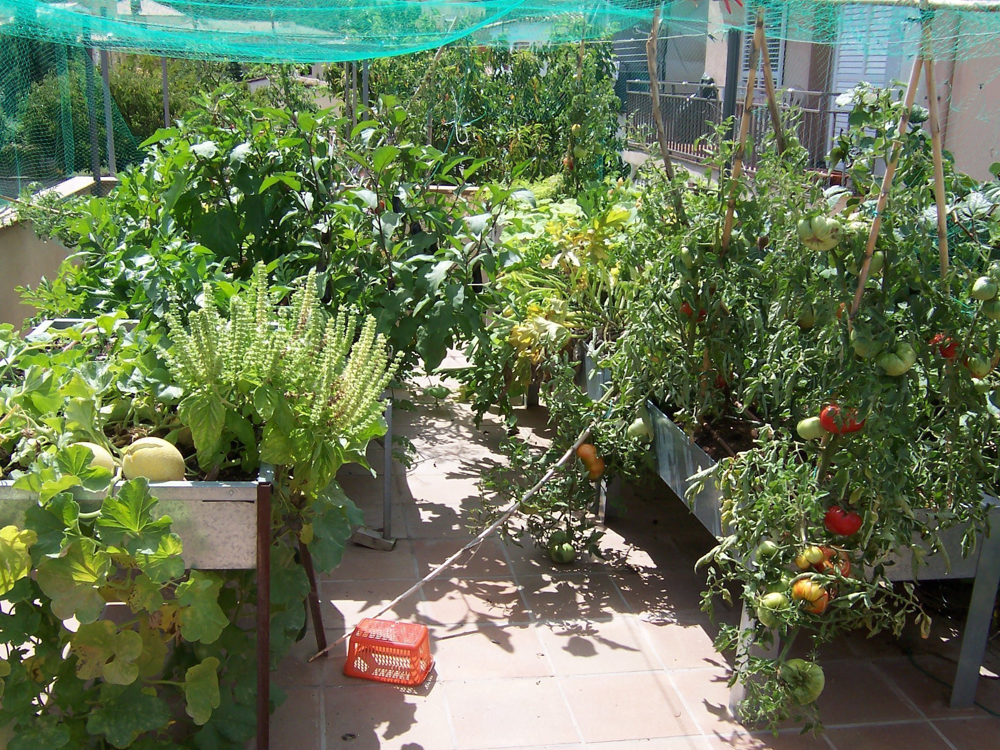
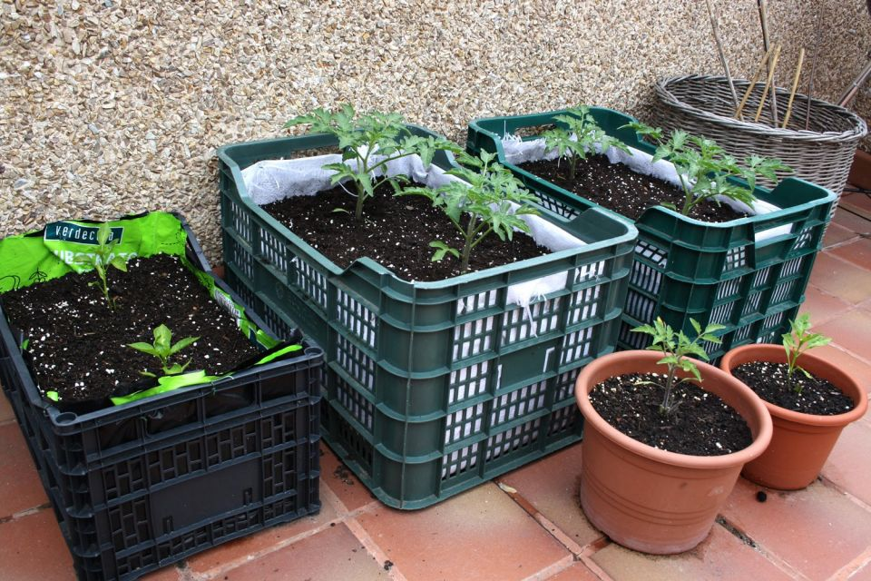
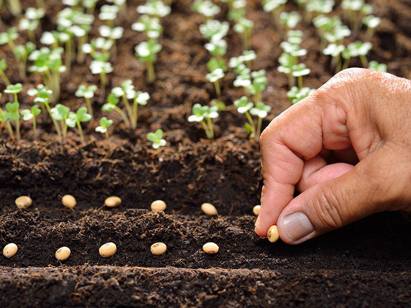
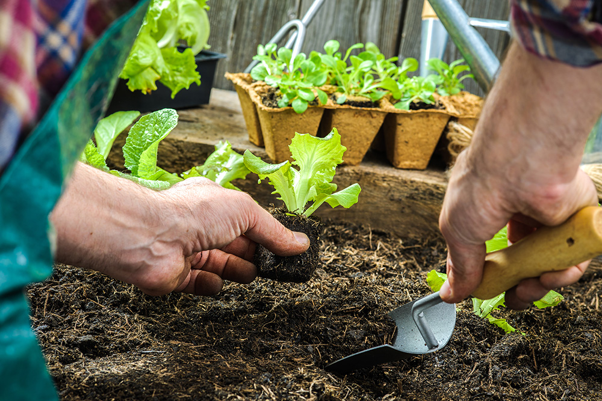

Una terraza, ventana o balcón puede convertirse en un lugar perfecto para cultivar las plantas.
Lo más aconsejable es que el huerto esté situado en una zona iluminada, orientado hacia el sur
para aprovechar el máximo número de horas del sol (8-10 horas de luz). Además, si es posible,
es recomendable que esté protegido de las corrientes de aire.
2. ¿Qué puedes plantar?

Antes de hacer tu huerto urbano deberás pensar en qué plantarás en él. Si eres principiante,
lo mejor será que optes por las verduras más fáciles de cultivar, ya que estas darán mejores
resultados, debido a que no suelen ser gravemente afectados por enfermedades y/o plagas.
Los cultivos más fáciles suelen tener un ciclo corto y se puedan cultivar durante casi todo el año.
Algunos de ellos son: acelgas, lechugas, rábano, ajo y cebollas. Si deseas profundizar en los tipos
de cultivos que puedes tener en tu huerto urbano, te recomendamos echar un vistazo al calendario de
siembra, el cual te servirá para saber qué plantar en cada época del año.
3. Busca los recipientes

Según las dimensiones de tu balcón, terraza o patio tendrás que elegir un tipo de maceta o contenedor
diferente para instalar el huerto urbano. En los recipientes de 7 a 15 centímetros de profundidad se
puede plantar casi de todo (zanahorias, tomates, judías, maíz, guisantes, calabazas, rábanos,
berenjenas, pepinos, albahaca, menta…), esto teniendo en cuenta que sus raíces no son de gran tamaño.
Por su parte, aunque los maceteros de barro son más pesados, son mejores que los de plástico porque
respetan la temperatura de la tierra. Las jardineras o la mesa de huerto son otras buenas opciones,
lo importante es que tengan un buen sistema de drenaje.
4. ¡Comienza a sembrar!

En este punto llega la parte más divertida de la preparación de tu huerto urbano. Busca tus guantes de
jardinería y ¡comienza a sembrar! Para ello, te compartimos dos formas que te pueden ser de utilidad:
Sembrar directamente en el huerto
Sembrar en recipientes o macetas pequeñas para después transplantarlos al huerto.
Hay hortalizas como el rábano, la zanahoria o el nabo que no se pueden trasplantar y obligatoriamente
se deben sembrar. Otras hortalizas (como la lechuga, la cebolla o el tomate) aunque se pueden sembrar
directamente, es aconsejable trasplantar el plantón.
5. Realiza el transplante

Cuando vayas a realizar el trasplante de los cultivos de tu huerto urbano debes tener presente el
cuidado de sus raíces. Lo ideal es que hagas un agujero de gran tamaño y presiones el sustrato, de
forma ligera, alrededor de la planta para poder comenzar a regar a continuación.
Volver a la página principal